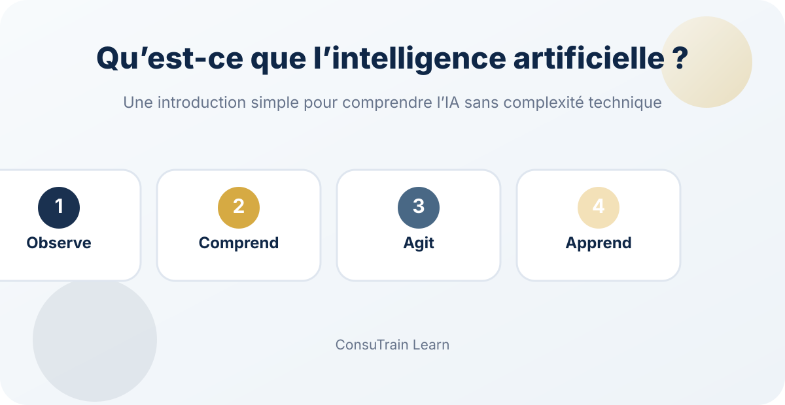

Radar technologique du management : des outils d'IA aux systèmes de travail intelligents
Comment les organisations passent d'outils d'intelligence artificielle isolés à des systèmes de travail connectés qui soutiennent l'automatisation, les ressources humaines, la gestion de projet et la production de contenu.

L'utilisation de l'intelligence artificielle dans les organisations ne se limite plus à rédiger un texte, créer une image ou résumer une réunion. La tendance la plus marquante consiste désormais à intégrer l'IA dans les processus de travail quotidiens, afin d'aider les équipes à planifier, organiser les données, produire du contenu, suivre les tâches et automatiser les activités répétitives.
Cette semaine, plusieurs évolutions méritent l'attention des dirigeants, des responsables RH, des équipes de formation et des chefs de projet.
1. Coordonner plusieurs agents IA au lieu d'utiliser un seul outil
Le concept d'orchestration des agents IA prend de l'importance. Il consiste à répartir les tâches entre plusieurs assistants spécialisés plutôt que de demander à un seul outil de tout traiter.
Dans une organisation, cela peut prendre la forme suivante :
- Un assistant reçoit les demandes ou les messages.
- Un deuxième les classe selon le sujet ou le niveau de priorité.
- Un troisième prépare une première réponse ou un brouillon de rapport.
- Un responsable vérifie le résultat avant la décision ou l'envoi.
Cette approche est particulièrement utile pour les organisations qui gèrent un grand volume de demandes ou de processus répétitifs, notamment dans le service client, les ressources humaines, le suivi de projets, la formation ou la gestion des connaissances.
Il est préférable de commencer par automatiser un seul processus clair et répétitif, comme la réception des demandes de formation ou le suivi des questions clients, puis de mesurer les résultats avant d'élargir le dispositif.
2. Automatiser l'intégration des nouveaux collaborateurs
L'un des usages les plus concrets de l'IA et de l'automatisation concerne l'intégration des nouveaux collaborateurs.
Au lieu de dépendre de messages dispersés et de listes manuelles, l'organisation peut créer un parcours structuré qui commence dès la validation du recrutement :
- Envoi automatique du message de bienvenue.
- Partage des politiques, formulaires et documents requis.
- Création des comptes et accès nécessaires.
- Planification de la formation initiale.
- Information du manager direct et de l'équipe informatique.
- Suivi des étapes à finaliser durant la première semaine.
Cette automatisation ne remplace pas le rôle humain du manager ou de l'équipe RH. Elle permet surtout de réduire les oublis, les retards et les tâches administratives répétitives.
Une organisation peut utiliser un formulaire numérique relié à Google Sheets et n8n afin de déclencher automatiquement un parcours d'intégration simple et traçable.
3. Créer des outils internes sans développement complexe
Les outils de création d'applications assistés par l'IA progressent rapidement. Ils permettent aux organisations de concevoir des prototypes ou des outils internes à partir d'une description claire du besoin.
Quelques exemples :
- Un système simple pour recevoir les demandes de consultation.
- Un tableau de suivi des projets et initiatives.
- Un registre des risques et opportunités d'amélioration.
- Un outil de suivi des formations et des présences.
- Un formulaire numérique de satisfaction des bénéficiaires.
- Une base de connaissances pour les politiques et procédures.
La réussite ne dépend toutefois pas uniquement de l'outil. Il faut commencer par clarifier le processus, les utilisateurs concernés, les données à gérer et les indicateurs de succès.
Commencez par un outil interne limité qui résout un problème réel, au lieu de chercher à construire immédiatement un système complet.
4. Transformer les notes en plans d'action
De nouveaux outils permettent de transformer les notes quotidiennes ou les mémos vocaux en tâches organisées et plans d'action.
Ils peuvent être particulièrement utiles aux dirigeants, chefs d'équipe et responsables de projet qui participent à de nombreuses réunions ou gèrent plusieurs priorités.
La valeur ne réside pas seulement dans la prise de notes, mais dans leur transformation en :
- Actions précises.
- Responsables identifiés.
- Échéances de suivi.
- Rappels.
- Points nécessitant une décision ou une escalade.
Une validation humaine reste nécessaire, en particulier lorsque les actions concernent des décisions financières, administratives ou des communications officielles avec des parties externes.
5. L'IA pour les présentations et le contenu institutionnel
Les outils de conception et de présentation assistés par l'IA deviennent capables de produire des premières versions de présentations, publications et visuels tout en respectant l'identité visuelle d'une organisation.
Ils peuvent soutenir les équipes dans :
- La préparation de présentations pour la direction.
- La synthèse des résultats de performance.
- La présentation des initiatives et projets.
- La préparation de supports de formation.
- La création de contenu de communication interne.
- La transformation de rapports longs en présentations plus claires.
Cependant, le message managérial, l'exactitude des données et les validations finales doivent rester sous responsabilité humaine.
Conclusion
Le changement le plus important ne consiste pas à utiliser un nouvel outil d'IA chaque semaine. Il consiste à repenser certains processus administratifs afin de les rendre plus clairs, plus rapides et plus mesurables.
Les organisations qui tireront le meilleur parti de l'IA ne seront pas forcément celles qui utiliseront le plus grand nombre d'outils, mais celles qui sauront répondre à trois questions :
- Quel processus répétitif consomme le plus de temps ?
- Quelles données devons-nous mieux organiser ou relier ?
- À quel moment la validation et la décision doivent-elles rester humaines ?
Commencez par un processus limité, testez-le, mesurez son impact, puis développez-le progressivement.
Transformez un processus répétitif en parcours clair, mesurable et contrôlé.
ConsuTrain peut vous aider à cadrer un premier cas d'usage, choisir les bons outils et définir les validations humaines nécessaires.